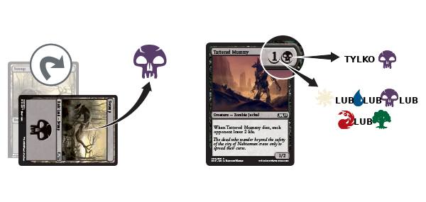

Magic the Gathering - Basic Rulebook¶
Magic Gameplay¶
If you are new to Magic, this section will provide an introduction to the game and a rulebook to refer to when you have questions.
Podstawowe tematy
Zaawansowane tematy
Jak czytać kartę do gry w Magic¶
Magic cards are formatted so that the information you need to know is always in the same place.

Nazwa¶
Each card has a name that serves as its unique identifier. Though a card may be reprinted in many Magic sets, no two cards with the same name will ever function differently. In most Magic formats, you can have up to four copies of a card with the same name (except basic lands, which are unlimited). When a card’s name appears in its text box, the card is referring only to itself, not to any other cards with the same name.
Koszt many¶
Mana is the resource used to cast spells in Magic. All spell cards
have a mana cost in the upper right corner. Serra Angel’s mana cost,

 , means that you must pay three mana of any
kind plus two white mana to cast it.
, means that you must pay three mana of any
kind plus two white mana to cast it.
Linia typu¶
Every card in Magic has a type, and some cards also have subtypes or supertypes that provide more information. For example, Serra Angel’s type is creature, and its subtype is Angel.
,
Islands make blue mana  , Swamps make black mana
, Swamps make black mana  ,
Mountains make red mana
,
Mountains make red mana  , and Forests make green mana
, and Forests make green mana
 .
.Możesz zagrywać jeden ląd w każdej z twoich tury. Aby zagrać ląd, umieść go na polu walki z twojej ręki podczas jednej z faz głównych w twojej turze.
 in its cost) until
it starts your turn under your control. You can block with a creature
no matter how long it’s been on the battlefield.
in its cost) until
it starts your turn under your control. You can block with a creature
no matter how long it’s been on the battlefield.Pole tekstu¶
Some cards have special abilities that are printed here (in the area above the dividing line), and abilities sometimes have reminder text in parentheses to help explain what they do. Flavor text may also appear in the text box, usually below a divider bar. Flavor text has no effect on gameplay; it’s a bit of story information about the card.
Zdolności stworów i innych permanentów na polu walki zwykle należą do jednej z trzech kategorii: zdolności statycznych, zdolności wyzwalanych oraz zdolności aktywowanych.
: Create a 1/1 colorless Thopter artifact
creature token with flying.” Some activated abilities contain the
(tap) symbol in their costs; this means that you must tap
that card to activate the ability. You can’t activate this kind of
ability if the permanent is already tapped or if it’s a creature with
summoning sickness.Siła/Wytrzymałość¶
Every creature card has a box in the lower right corner that shows its power and toughness. A creature’s power (the first number) is the amount of damage it deals in combat. Its toughness (the second number) is the amount of damage that must be dealt to it in a single turn to destroy it.

Symbol dodatku¶
This symbol tells you which Magic set the card is from. Each Magic set has its own distinct symbol, and the color of the symbol tells you the card’s rarity.


Pole gry¶
A game of Magic starts with only players’ decks and life counters on the table, but once each player has had a few turns to play lands, cast spells, and attack with creatures, a kind of virtual gameboard begins to take shape. That gameboard is divided into several different game zones. The previous page shows what a two-player game might look like after a few turns.
Biblioteka¶
Your library is your draw pile, which remains face down throughout the game. You lose the game if you are forced to draw a card but cannot because your library is out of cards.
Ręka¶
You start the game by drawing a hand of seven cards. If you have more than seven cards in your hand as your turn ends, you must discard down to seven.
Pole walki¶
You and your opponents share the battlefield. Cards that go onto the battlefield (including lands, creatures, artifacts, and enchantments) are called permanents. Instants and sorceries are never on the battlefield. You can arrange your permanents however you want (we recommend putting your lands closest to you), but your opponent must be able to see all of them.
Cmentarz¶
Cmentarz jest stosem kart odrzuconych; trafiają tu umarłe stwory, zniszczone artefakty lub uroki, a także karty odrzucone z ręki. Karty w twoim cmentarzu powinny być zawsze odsłonięte i każdy może je przeglądać w dowolnej chwili. Każdy gracz ma swój własny cmentarz.
Wygnanie¶
Jeśli czar lub zdolność wygania kartę, owa karta jest odkładana osobno od reszty gry. Karty na wygnaniu są zwykle odsłonięte.
Akcje w grze¶
This section describes the actions that you’ll take during a game, including tapping your cards, casting spells, and attacking and blocking with creatures in combat.
TAPPING AND UNTAPPING¶
To tap a card is to turn it sideways to show that it has been used for
the turn. You do this when you use a land to make mana, when you attack
with a creature, or when you activate an ability that has the
symbol as part of its cost ( means „tap this permanent”). When
a permanent is tapped, you can’t tap it again until it’s been untapped
(turned back upright). As your turn begins, untap your tapped cards so
you can use them again.
CASTING SPELLS¶
To cast a spell, you must pay its mana cost (located in the upper right
corner of the card) by tapping lands (or other permanents) to make the
amount and Game Actions type of mana which that spell requires. For
example, if you were casting Serra Angel, which costs
, you could tap three basic lands of any
type to pay plus two Plains to pay .
Once a spell has been cast, one of two things happens. If the spell is an instant or a sorcery, you follow the instructions on the card, and then you put the card into your graveyard. If the spell is a creature, artifact, or enchantment, you put the card on the table in front of you. The card is now on the battlefield.
Kart na polu walki nazywane są permanentami, by odróżnić je od sztuczek i obrzędów, które nigdy nie znajdują się na polu walki.
ATTACKING AND BLOCKING¶
The most common way to win the game is to attack with your creatures. If a creature that is attacking an opponent isn’t blocked, it deals damage equal to its power to that opponent.
The middle phase of each turn is the combat phase. In your combat phase, you choose which of your creatures will attack, and you choose which opponents they will attack. Tap your creatures to show that they are attacking. Your opponents then choose which of their creatures will block, if any. Tapped creatures can’t be declared as blockers.
Once all blockers have been chosen, each creature—both attackers and blockers—simultaneously deals damage equal to its power (the number on the left side of the slash in the lower right corner of the card).
- An attacking creature that isn’t blocked deals damage to the player it’s attacking.
- An attacking creature that is blocked deals damage to the creature or creatures that are blocking it, and vice versa.
If damage is dealt to your opponent, they lose that much life.
If one of your attacking creatures is blocked by multiple creatures, you decide how to divide its combat damage among them. You must assign at least enough damage to the first blocking creature to destroy it before you can assign damage to the second one, and so on.
If a creature is dealt damage equal to or greater than its toughness over the course of a single turn (whether it be combat damage, damage from spells or abilities, or a combination of both), that creature is destroyed, and it goes to its owner’s graveyard (or „dies”). If a creature takes damage that isn’t enough to destroy it in a single turn, that creature stays on the battlefield, and the damage wears off at the end of the turn.
In the following examples, an opponent is attacking you with a variety of creatures:¶

Mesa Unicorn deals 2 damage to you.

Mesa Unicorn is destroyed.

Both creatures survive.

Giant Spider is destroyed.
In this example, Dwarven Priest is attacking, and you have two creatures that can block. When you block one attacker with two or more creatures, your opponent must choose the order in which your blockers will take damage. Remember, the attacking player always chooses the order in which blocking creatures receive damage.
Reclamation Sage and Giant Spider will deal a total of 4 damage to Dwarven Priest, which is enough to destroy it. Meanwhile, Dwarven Priest can deal enough damage to destroy Reclamation Sage, but not enough to destroy Giant Spider. Since your opponent’s Dwarven Priest will be destroyed in either case, they order Reclamation Sage before Giant Spider so that at least one of your creatures will be destroyed.
Once blockers have been ordered, damage is dealt. Dwarven Priest deals 1 damage to Reclamation Sage, destroying it, then deals its remaining 1 damage to Giant Spider.
Advanced Topics¶
One of the most fun and interesting aspects of the Magic game is the tremendous number of unique cards you can play with, which in turn provide an incredibly wide range of things that could happen in any given game. This section is a reference for when you need to know more details about the rules of Magic.
TARGETING¶
Some spells and abilities use the word „target” to describe something that the spell or ability will affect. You must choose all targets for a spell when you cast it, and for an ability when it triggers or when you activate it. If you can’t meet the targeting requirements, you can’t cast the spell or use the ability. For example, if a spell has the text „Destroy target creature,” but there are no creatures on the battlefield, you can’t cast that spell because it has no valid targets.
If a spell „deals damage to any target,” you can choose any creature or player (or planeswalker, if a player has one) as a target for that spell.
Once you choose targets, you can’t change your mind later. When the spell or ability resolves, it checks the targets to make sure they’re still legal (that is, they’re still there and they still match the requirements of the spell or ability). If a target isn’t legal, the spell or ability can’t affect it. If none of the targets are legal, the spell or ability does nothing at all.
THE STACK¶
Stos jest strefą gry współdzieloną przez wszystkich graczy (podobnie do pola walki), gdzie czary i zdolności czekają na rozpatrzenie. Rozpatrzenie czaru lub zdolności oznacza po prostu, że ich efekt się wydarza.
When you have finished putting spells and abilities on the stack, priority then passes to the next player in turn order, who may want to use a spell or ability of their own in response. Subsequent players (including you) can then respond to that player’s response, and so on—the result is a „stack” waiting to resolve. Spells and abilities remain on the stack until all players choose not to cast any new spells or activate any new abilities.
A general rule is that spells and abilities on the stack resolve one by one, beginning with the last one put on the stack.
Each player has an opportunity to cast an instant spell (or activate an activated ability) in response to any spell or ability that goes on the stack. If a player does decide to respond, their spell or ability goes on the stack on top of what was already waiting there. When all players pass—that is, decline to do anything more—the top spell or ability on the stack will resolve.

After a spell or ability resolves, both players again get the chance to respond. If no one does, the next thing waiting on the stack will resolve. If the stack is empty, the current step of the turn will end, and the game will proceed to the next step.
Titanic Growth resolves, making Eager Construct a 6/6 until the end of the turn. Then Shock resolves and deals 2 damage to the pumped-up Eager Construct, which is not enough to destroy it.


Parts of the Turn¶
Each turn proceeds in the same sequence. Whenever you enter a new step or phase, any triggered abilities that happen during that step or phase trigger and are put on the stack. The active player (the player whose turn it is) gets to start casting spells and activating abilities, then each other player in turn order will too. When all players decline to do anything more and nothing is on the stack waiting to resolve, the game will move to the next step.

BEGINNING PHASE¶
- Untap step You untap all your tapped permanents. On the first turn of the game, you don’t have any permanents, so you just skip this step. No one can cast spells or activate abilities during this step.
- Upkeep step Players can cast instants and activate abilities. This part of the turn is mentioned on a number of cards. If something is supposed to happen just once per turn, right at the beginning, an ability will trigger „at the beginning of your upkeep.”
- Draw step You must draw a card from your library (even if you don’t want to). The player who goes first in a two-player game skips the draw step on their first turn to make up for the advantage of going first. Players can then cast instants and activate abilities.
FIRST MAIN PHASE¶
- You can cast any number of sorceries, instants, creatures, artifacts, enchantments, and planeswalkers, and you can activate abilities. You can play a land during this phase, but remember that you can play only one land during your turn. Your opponent can cast instants and activate abilities.
COMBAT PHASE¶
- Beginning of combat step Players can cast instants and activate abilities.
- Declare attackers step You decide which, if any, of your untapped creatures will attack, and which player or planeswalker they will attack. This taps the attacking creatures. Players can then cast instants and activate abilities.
- Declare blockers step Your opponent decides which, if any, of their untapped creatures will block your attacking creatures. If multiple creatures block a single attacker, you order the blockers to show which will be first to receive damage, which will be second, and so on. Players can then cast instants and activate abilities.
- Combat damage step Each attacking or blocking creature that’s still on the battlefield assigns its combat damage to the defending player (if it’s attacking that player and wasn’t blocked), to a planeswalker (if it’s attacking that planeswalker and wasn’t blocked), to the creature or creatures blocking it, or to the creature it’s blocking. If an attacking creature is blocked by multiple creatures, you divide its combat damage among them by assigning at least enough damage to the first blocking creature to destroy it, then by assigning damage to the second one, and so on. Once players decide how the creatures they control will deal their combat damage, the damage is all dealt at the same time. Players can then cast instants and activate abilities.
- End of combat step Players can cast instants and activate abilities.
SECOND MAIN PHASE¶
- Your second main phase is just like your first main phase. You can cast any type of spell and activate abilities, but your opponent can only cast instants and activate abilities. You can play a land during this phase if you didn’t play one during your first main phase.
ENDING PHASE¶
- End step Abilities that trigger “at the beginning of your end step” go on the stack. Players can cast instants and activate abilities.
- Cleanup step If you have more than seven cards in your hand, choose and discard cards until you have only seven. Next, all damage on creatures is removed and all “until end of turn” effects end. No one can cast instants or activate abilities unless an ability triggers during this step.